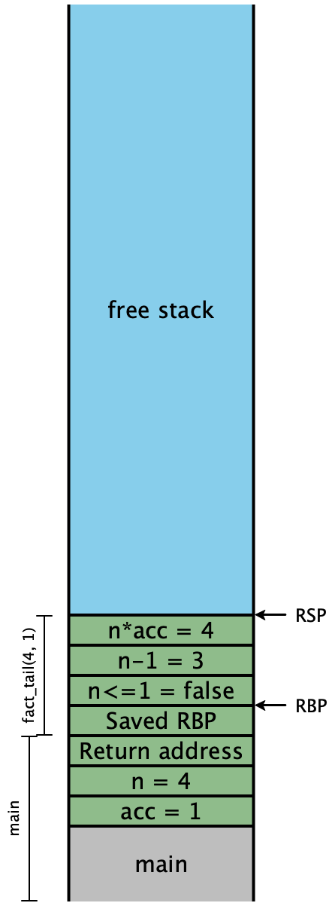
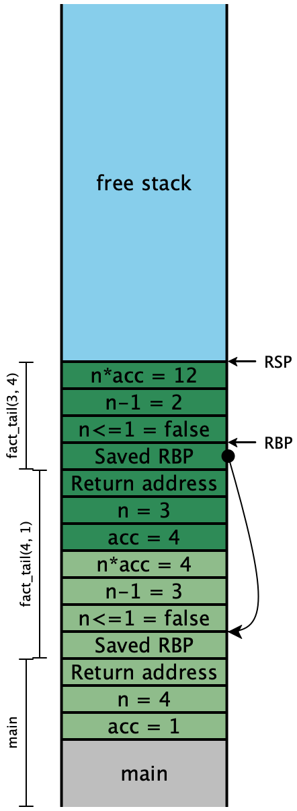
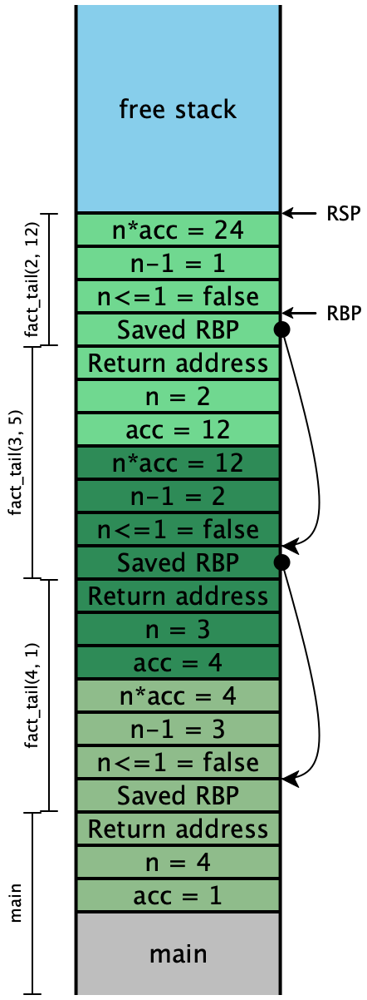
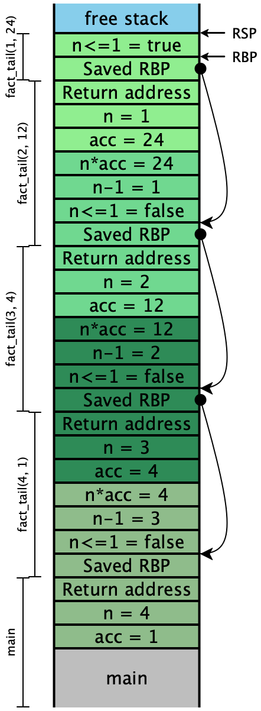

Lecture 7: Checking for errors and calling functions
Where we left off last time, we could work with both numbers and booleans in
our program. Unfortunately, we had no way of ensuring that we only worked with
them consistently, as opposed to, say, applying an arithmetic operation
to boolean values. Let’s remedy that. Our plan is to introduce a simplified
calling convention (essentially the 32-bit
cdecl
calling convention), and then fix up the details to match the actual calling
convention we’ll use (the 64-bit
“System
V AMD64” calling convention).
1 Checking for errors: Calling functions
Error handling is going to be a pervasive feature in our compiled output: we need to check the arguments and returned values of every operation are valid. That sequenece of checking instructions will appear at every location in the program that it’s needed. But the error handling itself is identical everywhere: we want to show some kind of message that describes the error that occured. So for example, we might want to check if a value is a number as follows:
... ;; get RAX to have the value we need
test RAX, 0x0000000000000001 ;; check only the tag bit of the value
jnz error_not_number ;; if the bit is set, go to some centralized error handler
error_not_number:
?????(The test instruction performs a bitwise-and of its two arguments and
discards the result, but sets the zero and signedness flags to be used with
conditional jumps.1test is to and the same way cmp is
to sub: they perform the same logical operation, but throw away the
results and keep only the flags. It’s convenient in this case, though for
more complex tag checks, we might need a cleverer sequence of assembly
instructions, possibly involving a second register as a temporary value.)
1.1 Caller- and callee-save registers
What code should we have at the error_not_number label? We’d like to be
able to be able to print some kind of error message when the arguments to an
operation are invalid. But our language doesn’t have any notion of strings
yet, so we have no way of representing a message, let alone actually printing
it. Fortunately, we have stub.rs available to us, and Rust does have
strings and printing. Our goal should then be to define a new function in
stub.rs and somehow call it from our compiled output.
(Note that this does not necessarily mean that we can call arbitrary functions from our source language, though it certainly does set the stage for us to do so later!)
To understand how to call a Rust function, we need to understand a bit about the C calling convention. The calling convention describes an agreement between the callers of functions and the callee functions on where to place arguments and return values so the other function can find them, and on which function is responsible for saving any temporary values in registers.
We’ve already encountered one part of the calling convention: “the answer goes
in RAX.” This simple statement asserts that the callee
places its answer in RAX, and the caller should expect to look for the
answer there...which means that the caller should expect the value of RAX
to change as a result of the call. If the caller needs to keep the old value
of RAX, it is responsible for saving that value before performing the
call: we say this is a caller-save register. On the other hand,
functions are allowed to manipulate the RSP register to allocate
variables on the stack. When the function returns, though, RSP must be
restored to its value prior to the function invocation, or else the caller will
be hopelessly confused. We say that RSP is a callee-save
register. In general, the calling convention specifies which registers are
caller-save, and which are callee-save, and we must encode those rules into our
compilation as appropriate.
So far, our compilation has only ever dealt with local variables; we haven’t
considered what it means to accept any parameters as inputs. Where should they
go? Our current reference point for finding local variables is RSP, and
our variables are found at consecutive offsets just smaller than it, which
implies our parameters probably ought to go in the other direction, at
consecutive offsets after it. Since we’re counting “outwards” from this
reference point, we should wind up with a picture that looks vaguely like this:

This suggests that we can call a function using the 32-bit calling
convention by pushing its arguments onto the stack in reverse
order, and then simply calling it. The push instruction
decrements RSP by one slot, and then moves its argument into the
memory location now pointed to by the new RSP value.
Pictorially,
Initial |
|
|
|
|
 |
|  |
|  |
The call instruction is slightly more complicated, mostly because it needs
to handle the bookkeeping for what should happen when the call returns:
where should execution resume? Every instruction exists at some address in
memory, and the currently executing instruction’s address is stored in
RIP, the instruction pointer. Our assembly code should never
modify this register directly. Instead, the call instruction first
pushes a return address describing the location of the next instruction
to run —RIP just after the call
instruction itself —
Putting these two instructions together, if we were using the 32-bit
calling convention, we would implement error_not_number as follows.
First we need to declare at the beginning of our generated assembly that we expect our rust code to define a symbol ‘snake_error‘
section .text
global start_here
extern snake_errorThen we define a block that calls the snake_error function.
error_not_number:
push RAX ;; Arg 2: push the badly behaved value
push 1 ;; Arg 1: a constant describing which error-code occurred
call snake_error ;; our error handlerAnd finally in stub.rs we implement the error handler, with
annotations that tell the Rust compiler to make it available to
compiled_code.s:
type ErrorCode = u64;
static ADD1_ERROR: ErrorCode = 0;
static ADD_ERROR: ErrorCode = 1;
#[export_name = "\x01snake_error"]
extern "C" fn snake_error(err_code: u64, v: SnakeVal) {
if err_code == ADD1_ERROR {
eprintln!("add1 expected a number but got a boolean {}", sprint_snake_val(v));
} else if err_code == ADD_ERROR {
eprintln!("+ expected a number but got a boolean {}", sprint_snake_val(v));
} else {
eprintln!("I apologize to you, dear user. I made a bug. Here's a snake value: {}", sprint_snake_val(v));
}
std::process::exit(1);
}1.2 The base pointer
If we compiled this code against Rust with the 32-bit calling
convention, it would crash. We are not yet quite respecting the
calling convention completely. Notice that we refer to it as the
“call stack”, and yet we only are pushing onto our stack: we’re
never popping anything back off! Moreover, all this pushing and
(eventually) popping keeps changing our RSP value, which means
anything we try to do to access our local variables will break at
runtime.
Instead of basing our local variables off this constantly-shifting stack
pointer, the calling convention stipulates that we save the stack
pointer as it was at the beginning of our function. Provided we never modify
that register during the execution of our function, it will remain a constant
against which our local-variables’ offsets can be based. This register,
RBP, is accordingly known as the base pointer.
Do Now!
Should
RBPbe a caller-save or callee-save register?
Since the mere act of using a call instruction changes RSP, we
can’t know what the correct value should be until inside the callee.
Therefore, if the callee sets the value, it must be responsible for restoring
the old value. To do that, we must push the old value of RBP onto the
stack, and restore it on our way out. We can now revise our original sketch of
a 32-bit C-compatible stack:

Between the parameters and the locals we have two additional slots, for storing
the return address and the old value of RBP. The stack obeys the
invariant that
Every function’s locals are saved in its stack frame, the region between
RBPandRSP.RBPalways points to the beginning of the current stack frameRSPalways points to the beginning of the next stack frame
(In this diagram, the color of the cells does not quite align with the labeling of stack regions as “caller” or “callee”: the labels describe what values a function puts on to the stack, while the color marks which values a function uses during its computation.)
To preserve this invariant, we have to add some setup and teardown code to the
beginnings and ends of functions. In particular, we need to add this code to
our_code_starts_here, because our code really just is a function that
participates in the C stack. We also need to add code surrounding every
function call.
In the callee:
At the start of the function:
push RBP ; save (previous, caller's) RBP on stack push ... ; save any other callee-save registers mov RBP, RSP ; make current RSP the new RBP sub RSP, 8*N ; "allocate space" for N local variablesAt the end of the function
mov RSP, RBP ; restore value of RSP to that just before call ; now, value at [RSP] is caller's (saved) RBP pop ... ; pop any other callee-save registers pop RBP ; so: restore caller's RBP from stack [RSP] ret ; return to caller
In the Caller:
To call a function target that takes M parameters:
push arg_M ; push last arg first ... ... push arg_2 ; then the second ... push arg_1 ; finally the first call target ; make the call (which puts return addr on stack) add RSP, 8*M ; now we are back: "clear" args by adding 8*numArgs
Do Now!
Draw the sequence of stacks that results from our error-handling code, using this more precise understanding of what belongs on the stack.
2 Upgrading to 64-bit calling conventions
2.1 Step 1: passing some arguments via registers
All this messing about with the stack pointer is expensive, since in general
most functions don’t have many arguments, and on 64-bit architectures we have
enough registers available that most functions can get away
without using the stack at all. Accordingly, the 64-bit calling convention in
use on Linux and Mac systems doesn’t put all the arguments on the stack.
Instead, the first six arguments go in registers RDI, RSI,
RDX, RCX, R8, and R9 in that order, and the seventh and
subsequent arguments go on the stack. So our caller code for a function with
\(M \geq 7\) arguments should look like:
push arg_M
...
push arg_7
mov R9, arg_6
mov R8, arg_5
mov RCX, arg_4
mov RDX, arg_3
mov RSI, arg_2
mov RDI, arg_1
call target
add RSP, 8*(M - 6)For six or fewer arguments, we might be able to elide some or all of that
machinery, and in particular avoid manipulating RSP.
However, there is one more remaining caveat. Upon entry to a function RSP
must be a multiple of 16, i.e. it must look like 0xWWWWWWWWWWWWWWW0.
Depending on the current value of RSP, we might need to push an
extra slot of padding onto the stack to ensure the required alignment before
calling the target function; on return from the function, we might need
to pop that slot back off by adding one extra slot in our cleanup
step.
2.2 Step 2: Saving the caller-save registers
As part of the function-call process, we overwrite the values of the six argument registers. Unfortunately, we might have been using those registers ourselves. If there’s more code later in our function that needs those values, we need to have saved them somewhere: these six argument registers are definitely caller-save registers. We could do this in a few different ways:
The easiest, and probably most expensive, way is to save the arguments we need onto the stack before the
call, and restore them after the callreturns:push R9 ; \ push R8 ; | push RCX ; | save the current values push RDX ; | of the caller-save push RSI ; | argument registers push RDI ; / push arg_M ; \ ... ; | push arguments 7--M push arg_7 ; / mov R9, arg_6 ; \ mov R8, arg_5 ; | mov RCX, arg_4 ; | mov RDX, arg_3 ; | set up the first six arguments mov RSI, arg_2 ; | mov RDI, arg_1 ; / call target add RSP, 8*(M - 6) ; pop arguments 7--M pop RDI ; \ pop RSI ; | restore the current values pop RDX ; | of the caller-save pop RCX ; | argument registers pop R8 ; | in reverse order from saving them pop R9 ; /(Again, we can simplify this if there are fewer arguments.)
The smarter, but trickier, approach might be to copy all the arguments out of registers into local variables (on the stack) at the beginning of each function, and then never refer to the registers directly again. This will always work, but somewhat defeats the efficiency gains of passing arguments in registers...
Smarter still is to determine which of the arguments we actually will use again once this function call returns, and save only that subset of the argument registers. This is called liveness analysis, which we will return to in due time.
2.3 Putting the pieces together
Our compiler should now insert type checks, akin to the test instruction
with which we started this lecture, everywhere that we need to assert the type
of some value. We then need to add a label at the end of our compiled output
for each kind of error scenario that we face. The code at those labels should
move the offending value (likely in RAX) into RDI, followed
by the error code into RSI, and then call the snake_error function in
stub.rs. That function must be elaborated with a case for each kind of
error we face.
We must change the prologue and epilogue of our_code_starts_here to
include the callee’s responsibilities of saving and restoring RBP and
RSP. Also, we must change our compilation of local variables! In
particular, we need to stop referring directly to RSP, and instead use
RBP—
With all these changes in place, our code should now properly test for erroneous operands and complain rather than produce bogus output. Unfortunately, it’s still slightly broken.
2.4 Stack frame sizes
We have one last problem to manage. Since the code sequence for a function
call uses push to push arguments onto the stack, we need to ensure that
RSP is above all our local variables. We need to “preallocate” space
for them in our stack frame. To do that, we need to know how much space we’ll
need, which in turn means we need to know how many local variables we’ll
need. Sadly, computing the exact answer here is undecidable. But we can
overapproximate:
We could just allocate 100 variables and call it good-enough-for-now. This is lousy, but it’s a decent heuristic with which to test all the rest of our code.
We could count the total number of let-bindings in our expression.
Can we do better? Consider how the environment grows and shrinks as we manipulate an expression: its maximum size occurs at the deepest number of nested let-bindings. Surely we’ll never need more locals than that, since we’ll never have more names in scope at once than that!
Exercise
Construct a function
count_varsthat computes this quantity. Work by cases over the AST in sequential form.
Once we’ve computed this quantity, we use it to decrement RSP at the start
of our_code_starts_here, and now at last our compiled output works
correctly.
3 What calling convention to use?
The initial calling convention presented above was straightforward: all the arguments go on the stack: they’re pushed in reverse order by the caller, used by the callee, and then popped off again by the caller.
The 64-bit calling convention is much less uniform, with the first six arguments being passed in registers. It has some performance advantages in some circumstances (and with more sophisticated compiler passes that we don’t yet have, to take advantage of it), but its primary selling point is simply that it is what C uses, and therefore it’s what our runtime uses, and therefore it’s what we need to use to interact with our runtime.
But that does not mean we necessarily need to use that calling convention ourselves, for functions in our source language (as we’ll do soon) that call other functions from the source language. In some ways, we can think of our simpler stack-only calling convention as a subset of the 64-bit one: every one of our functions takes six extra “junk” arguments in the six argument registers, and then arguments 7 and up are all passed on the stack. As a result, we’ll stick with the simpler stack convention in this course, and we can revisit this decision later if necessary.
4 Testing
Our programs can now produce observable output! Granted, it is only complaints about type mismatches, so far, but even this is useful.
Exercise
Construct a test program that demonstrates that your type testing works properly. Construct a second test program that demonstrates that your
ifexpressions work properly, too. Hint: sometimes, “no news is good news.”
Exercise
Enhance your compiler with a new unary primitive,
1test is to and the same way cmp is
to sub: they perform the same logical operation, but throw away the
results and keep only the flags.